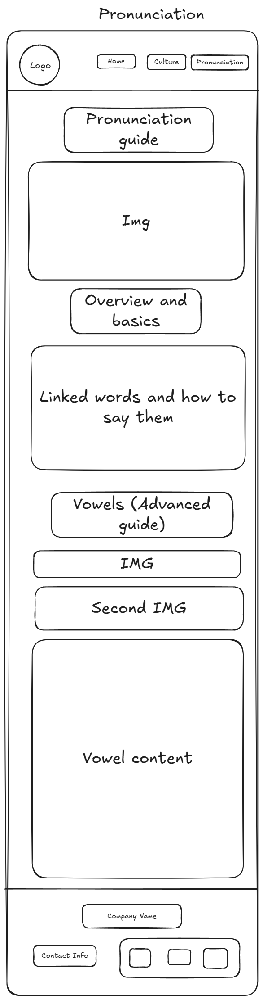

Japanese Dishes

Nigiri
Hand-pressed sushi: a slice of raw fish or seafood placed atop a small ball of vinegared rice. Common toppings include salmon, tuna, or shrimp.
Maki
Rolled sushi wrapped in seaweed (nori), cut into bite-sized pieces. Filled with ingredients like cucumber, avocado, and fish. California rolls and tuna rolls are examples.
Uramaki
Inside-out rolls where the rice is on the outside and nori is inside. Often topped or coated with sesame seeds, fish roe, or sauces.
Temaki
Hand-rolled cones of nori filled with rice, vegetables, and fish. Eaten like a sushi ice cream cone, great for casual settings.
Inari
Sushi rice stuffed inside sweet, marinated tofu pouches. Vegetarian-friendly and mildly sweet.
Shoyu Ramen
Soy sauce-based broth—clear, brown, and savory with a slightly tangy, salty flavor. Often served with chicken, bamboo shoots, and nori.
Miso Ramen
Rich, hearty broth made from fermented soybean paste. Originating in Hokkaido, it’s thick and nutty, often topped with corn, butter, pork, and bean sprouts.
Shio Ramen
Salt-based broth—light, clear, and often made with seafood or chicken. Tends to be more delicate and less fatty, with a clean flavor profile.
Tonkotsu Ramen
Creamy, rich broth made by boiling pork bones for hours. It’s thick, cloudy, and savory, with a deep umami taste. Popular in Kyushu.
Best Restaurants to Visit
A list of the best rated restaurants I can find: location, avg costs, specialty, type.
Travel Routes
Some travel routes to visit cool places and restaurants along the way and transportation.

Phrases and Culture
Useful Phrases
Sumimasen すみません will be your best friend in Japan. The usual translation is “excuse me” with a polite connotation. If you say sumimasen and point to something or even say a word that is usually enough and is even preferable to ask questions. For example, you need to find a restroom, “えっとすみません、トイレは？” “etto sumimasen, toire wa”? meaning “Um excuse me, the toilet/restroom is (where is implied here)”
TODO: add more
Table Manners and Restaurant Culture
It is common to say itadakimasu いただきます, which basically means let’s eat, after everyone has gotten their food and before eating. TODO: add more
It’s considered rude to make loud sounds in restaurants. Things like burping, slurping, and audible munching to name a few. If you’re American you’ll be relieved to hear that tipping in Japan is very rare. If you do tip, they will most likely turn it down out of humbleness which is big in Japanese culture. Don’t eat outside and expect trash cans to be few and far between outside. It’s an expectation to hold onto trash until you find a place to dispose of it.
Images for the Page 2


Pronunciation
Pronunciation Guide
May put superscript links on JP words from other places and link them here on how to say them, and a general guide on saying vowels for those who really want it to be close.
More in-depth Pronunciation
Vowels
Visual example of the different positions in the mouth from ToFuGu
Visual example of where the tongue should be for each vowel from ToFuGu
あ(a) pronounced like a short “ah” where the tongue should be in the back while being low in the mouth
え(e) pronounced like the “e” in “men”, the tongue is in the front while being low
い(i) pronounced like the “e” in “me”, the tongue is in front while being higher in the mouth
お(o) pronounced like the “o” in “open”, the tongue is in the back while being in the middle height-wise
う(u) pronounced like the “oo” in “Winnie the Pooh”, the tongue is in the back and is shaped like a slide where the back of the tongue is in the top, middle of the tongue is in the middle, and the front of the tongue is on the bottom to middle.
Glottal Stops
Glottal stops are achieved by stopping the airflow in the beginning of a consonant and then using airflow to pronounce it e.g. “clipboard” and “background”. You don’t say “clipuh-board” nor do you say “backuh-ground”. Glottal stops are denoted by a っwhich looks like a small つ or in romaji (English letters essentially) it will have the consonant doubled e.g. kippu きっぷ.
Images for the Page 3


Wireframes
Create three wireframes for your site. One for each page and list them here
Home
[Any additional details about home that the wireframe does not make clear]

Phrases & Culture
[Any additional details about page 2 that the wireframe does not make clear]

pronunciation
[Any additional details about page 3 that the wireframe does not make clear]
